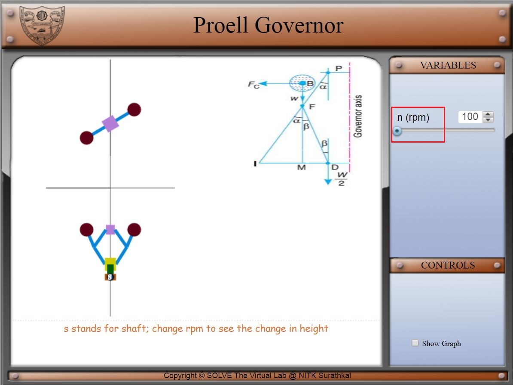
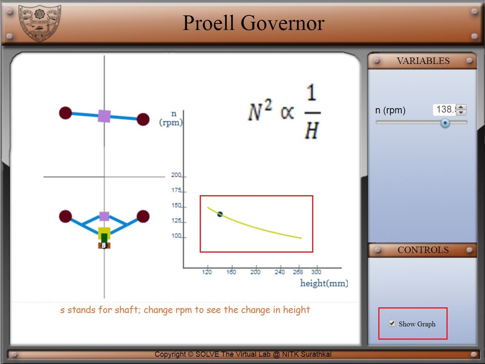

Learning objective:
After completing this simulation experiment of Proell governor one should be able to:
- Define advantage over Porter governor
- Explain the working of Proell governor
- Derive governing equation of Proell governor
- Understand advantage over Porter governor
Introduction:
Governors, in general, are most useful means of controlling or regulating the speed of an engine based on varying levels of the load at the output. Though the concept of governors and flywheels are many times misunderstood, both act for a different set of purposes. While the former regulates the speed considering the variations seen in the loading conditions, the latter regulates the speed due to the variations are seen in the engine due to moment fluctuations. Think of the governors from its usefulness. They are used in regulating the speed of the engine, which takes to the fact that the fuel injected is based on the speed variations seen along the shafts
Proell governor is a type of gravity controlled centrifugal governor. Its construction is similar to porter governor (It has a central load like in the porter governor). However, in Proell governor, the balls are attached to the extension link. The construction and working of Proell governor similar to porter governor. The only difference is that the governor balls are fixed at the upward extension of links.
Figure1:Proell governor
Mathematical equation:
By considering the equilibrium force for half of the governor referring above figure. The instantaneous centre (I) lies on an extension of PF and MD in a leftward direction. BM is drawn a perpendicular to the ID. If we take a moment of inertia through I,
Where, [ID = IM+MD]
Multiplying and dividing both sides by FM we get,
is the required equation.
Advantages over Porter governor:
Comparing final equation of Proell (3) with the final equation of the Porter governor, we will see that for a given value of m, M and h equilibrium speed reduces. So for having the same equilibrium speed for m, M and H ball of smaller masses can be used in Proell governor compare to Porter governor.

AIM: To visualize the working and effect of speed change through simulation
Steps:
- In simulation window side and top view of Proell governor is given.
- You can see the effect on the governor by changing rotational speed from 100 to 150 rpm.
 - Speed control pointer is given on top left of the screen and on the bottom left one checkbox for the graph is available
- This graph shows the trend of governor height on varying the rotational speed of governor.



Proell governor
- Briefly classify the governors?
- Derive the final height equation of Proell governor?
- Write the advantages of Proell governor over portal governor?
EXPLORE:
- Why don't we use governor in petrol engines?
- Which is the technology that is replacing mechanical governor in a modern car?